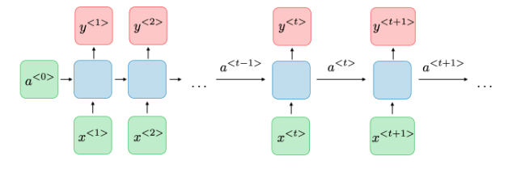
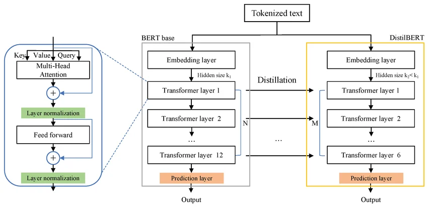
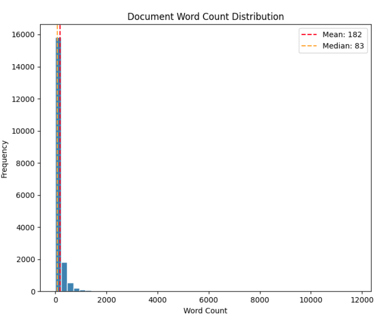
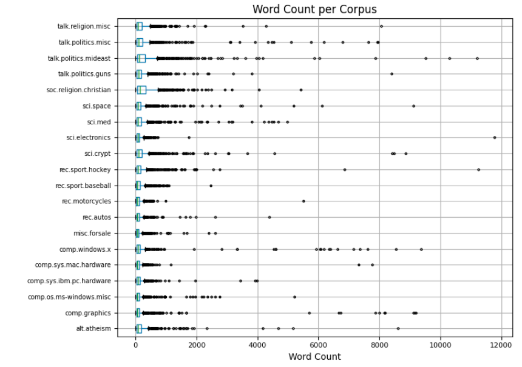
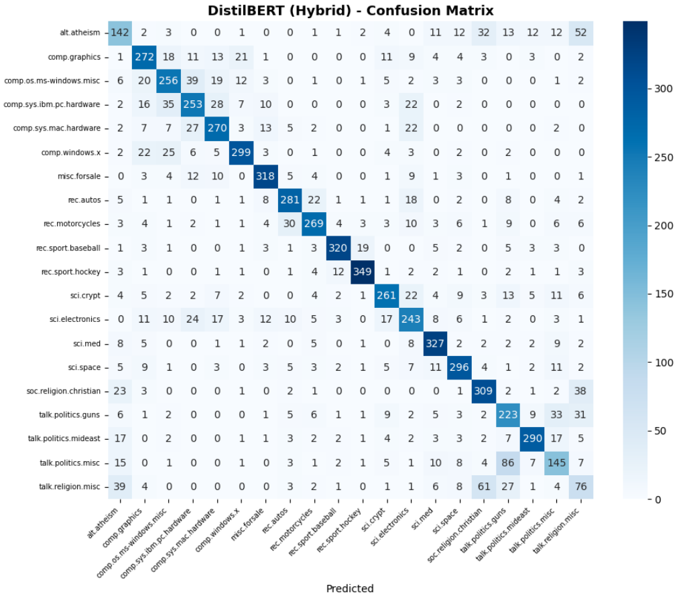
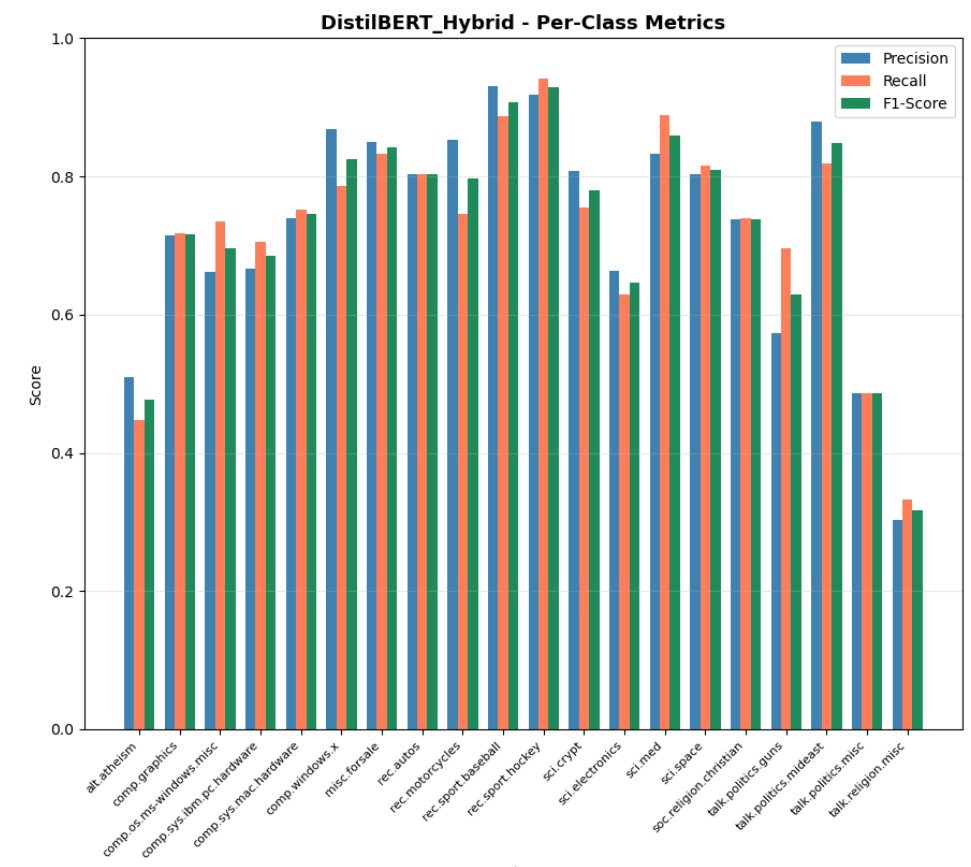
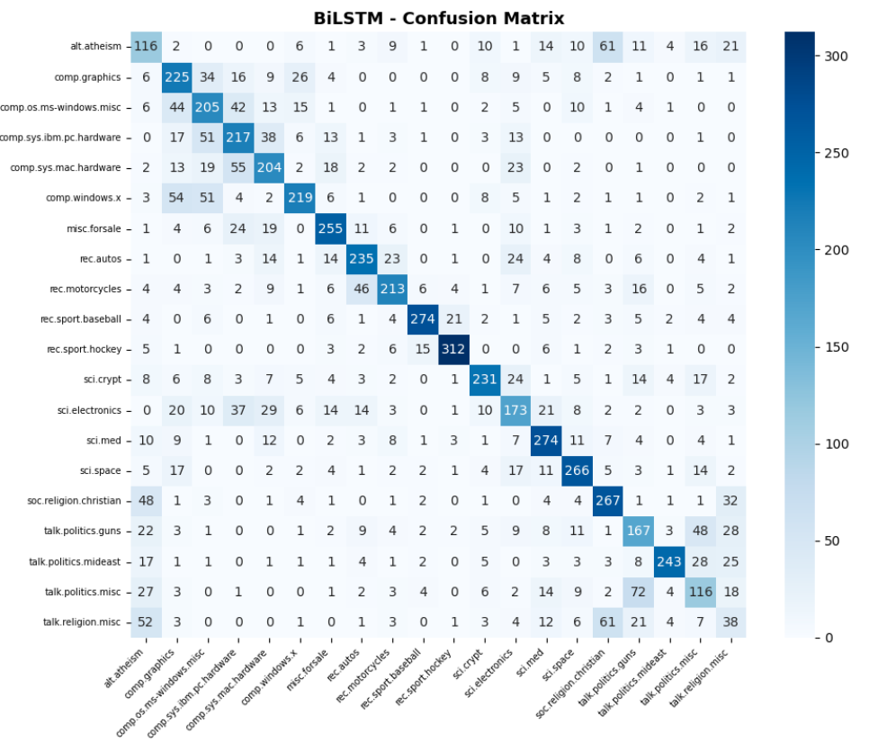
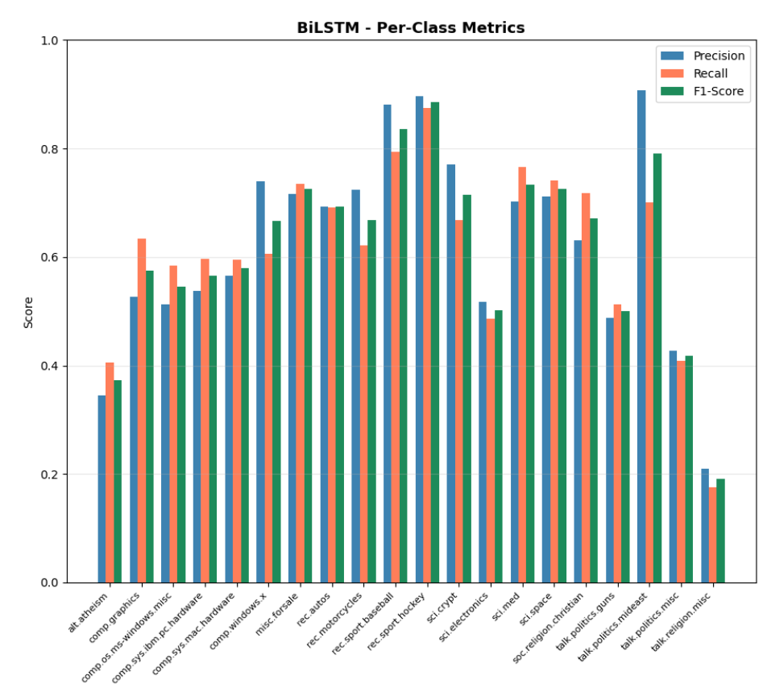
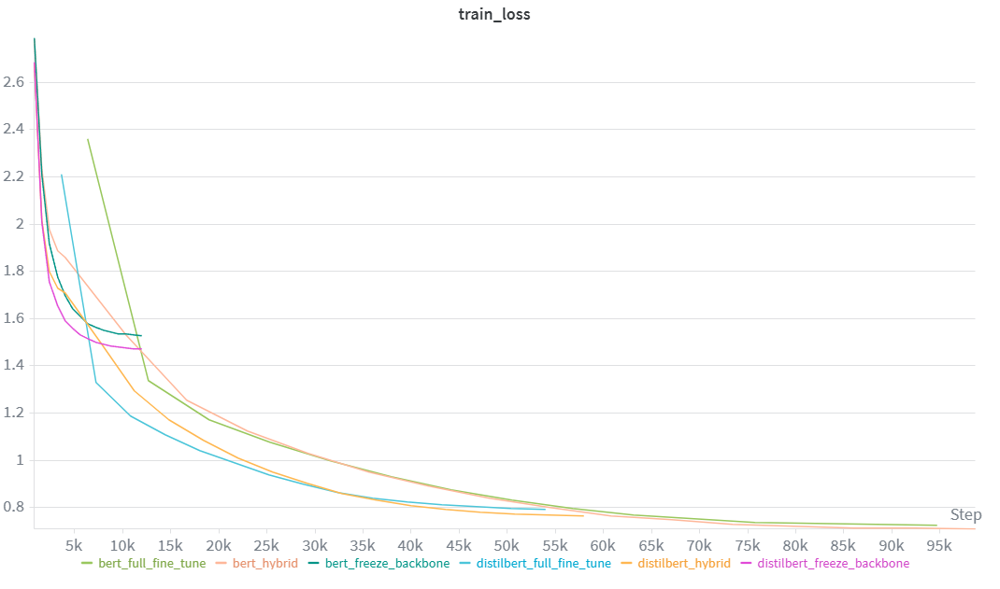
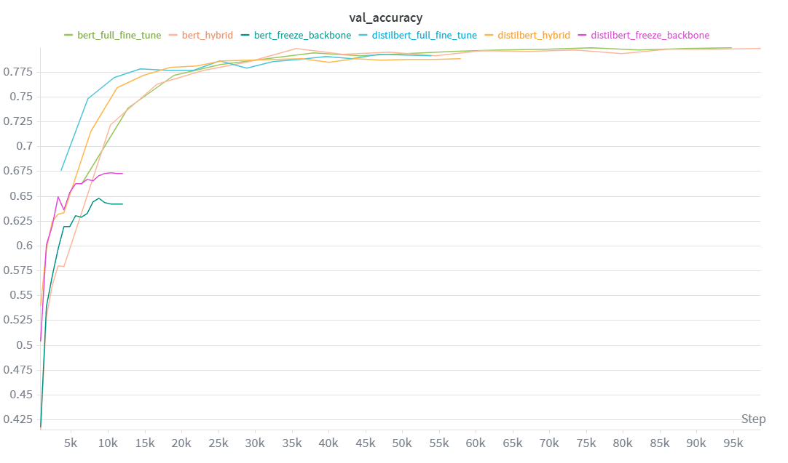

Dataset
20_newsgroups
18,846 docs, 20 classes
Text track
This section explores the performance and architectural differences between sequential and attention-based deep learning models. Specifically, we compare an LSTM (Long Short-Term Memory) network, a type of RNN designed to mitigate the vanishing gradient problem and capture long-term dependencies in sequential data, against DistilBERT, a smaller, faster, and distilled version of the BERT Transformer that leverages bidirectional self-attention to understand context and relationships within text.
Dataset
20_newsgroups
18,846 docs, 20 classes
bidirectional Attention-based LSTM result
69.72%
Accuracy
fine-tune BERT best result
79.86%
Accuracy
Sequential Model
❏Architecture of a traditional RNN Recurrent neural networks, also known as RNNs, are a class of neural networks that allow previous outputs to be used as inputs while having hidden states[1] .

Image 1: Architecture of a traditional RNN
For each timestep \( t \), the activation \( a^{\langle t \rangle} \) and the output \( y^{\langle t \rangle} \) are expressed as follows:
| Type of gate | Role | Value range |
|---|---|---|
| Update gate \( \Gamma_u \) | How much past should matter now? | 0 (ignore) → 1 (update fully) |
| Relevance gate \( \Gamma_r \) | Drop previous information? | 0 (drop) → 1 (keep) |
| Forget gate \( \Gamma_f \) | Erase a cell or not? | 0 (erase) → 1 (remember) |
| Output gate \( \Gamma_o \) | How much to reveal of a cell? | 0 (hide) → 1 (reveal) |

Image 2: Architecture of an LSTM memory cell
| Characterization | Definition | Equation (LSTM) |
|---|---|---|
| \( \tilde{C}_t \) | Candidate cell state | \( \tanh(W_c [h_{t-1}, x_t] + b_c) \) |
| \( C_t \) | Updated cell state (Long-term memory) | \( f_t \star C_{t-1} + i_t \star \tilde{C}_t \) |
| \( h_t \) | Hidden state (Output/Short-term memory) | \( o_t \star \tanh(C_t) \) |
Attention Model
❏ Student architecture The student - DistilBERT - has the same general architecture as BERT. The token-type embeddings and the pooler are removed while the number of layers is reduced by a factor of 2. Most of the operations used in the Transformer architecture (linear layer and layer normalisation) are highly optimized in modern linear algebra frameworks and our investigations showed that variations on the last dimension of the tensor (hidden size dimension) have a smaller impact on computation efficiency (for a fixed parameters budget) than variations on other factors like the number of layers[4] .

Image 3: DistilBERT architecture overview
References
Problem statement
There are diversities of papers, newsletter, books... with various genres. We are not, however, able to manually distinguish between them in a short time. Therefore, RNN-based LSTM and Transformer-based DistilBERT are both taken into account to estimate the accuracy of classifying categories of each document based on natural language input.
Dataset summary
| Statistic | Value / Info |
|---|---|
| Total words | 3,423,145 |
| Total characters | 22,043,554 |
| Min docs/class | 628 (talk.religion.misc) |
| Max docs/class | 999 (rec.sport.hockey) |
| Mean docs/class | 942.3 |
| Std | 97.0 |
| Metric | Value |
|---|---|
| Mean | 181.6 |
| Median | 83.0 |
| Std | 501.3 |
| Min | 0 |
| Max | 11765 |
| Q25 | 40 |
| Q75 | 166 |
Word Analysis

Word Analysis

1. Loading & EDA
2. Text Preprocessing
3. Train/Val/Test Split
| Split | Samples | Note |
|---|---|---|
| Train | 8,584 | Stratified |
| Validation | 2,146 | Stratified |
| Test | 7,112 | Stratified |
4. Tokenization
5. Class Balancing
6. DataLoader
RNN model
Architecture
Training
Evaluation
classification_report.Comparison
Transformer model
Model building
Training
Evaluation
classification_report.Comparison
Add the final metrics table, figures, qualitative examples, and analysis here.
Evaluation
After training, the model was evaluated on the held-out test set (7,112 samples) using multiple metrics to provide a comprehensive view of classification performance.
| Metric | Value |
|---|---|
| Accuracy | 73.88% |
| F1 Macro | 0.7268 |
| F1 Weighted | 0.7400 |
| Precision | 0.7299 |
| Recall | 0.7258 |
| Best class | rec.sport.hockey (F1: 0.93) |
| Worst class | talk.religion.misc (F1: 0.32) |

Image 4: DistilBERT Confusion Matrix

Image 5: DistilBERT F1 Scores Bar Chart
RNN Performance
The BiLSTM model was evaluated after 20 epochs, reaching its peak validation accuracy of 69.72% at epoch 18.
| Metric | Score |
|---|---|
| Accuracy | 62.90% |
| F1 Macro | 0.6179 |
| F1 Weighted | 0.6311 |
| Precision | 0.6251 |
| Recall | 0.6155 |
| Best class | rec.sport.hockey (F1: 0.89) |
| Worst class | talk.religion.misc (F1: 0.19) |

Image 6: BiLSTM with Attention Confusion Matrix

Image 7: BiLSTM with Attention F1 Scores Bar Chart
Discussion
Specific misclassifications reveal systemic issues in text understanding:
Comparison
A systematic comparison will be conducted across three dimensions:
Results will be reported in the following format after all experiments are completed:
| Model | Val Acc | Test Acc | F1 Macro | Train Time (s) | Inference (ms) | Params |
|---|---|---|---|---|---|---|
| DistilBERT (Hybrid) | 78.89% | 73.88% | 72.68% | 735s | 44.1ms | 67.0M |
| BiLSTM + Attention | 69.72% | 62.90% | 0.6179 | 85s | - | 15.8M |
The ~11% accuracy gap between BiLSTM (62.9%) and BERT (73.88%) demonstrates that:
Extension 1
Three fine-tuning strategies were evaluated on both DistilBERT (67M params) and BERT-base (110M params):
A layerwise differential learning rate strategy was applied to both the Hybrid and Full fine-tune approaches to prevent catastrophic forgetting and ensure stable convergence:
| Model | Strategy | Val Acc | Test Acc | Train Time (s) | Inference (ms) | Params |
|---|---|---|---|---|---|---|
| DistilBERT | Freeze backbone | 67.38% | 66.15% | 292 | 44.3 | 66,968,852 |
| DistilBERT | Hybrid | 78.89% | 73.88% | 735 | 44.1 | 66,968,852 |
| DistilBERT | Full fine-tune | 79.33% | 74.06% | 644 | 44.4 | 66,968,852 |
| BERT | Freeze backbone | 64.80% | 62.93% | 501 | 88.2 | 109,497,620 |
| BERT | Hybrid | 79.86% | 74.77% | 1337 | 88.3 | 109,497,620 |
| BERT | Full fine-tune | 79.96% | 74.17% | 1168 | 87.9 | 109,497,620 |

Image 8: Training Loss Comparison

Image 9: Validation Accuracy Comparison (Transformers)
Extension 2
A comparison of model efficiency across DistilBERT and BERT-base, evaluating accuracy vs model size and inference time.
| Metric | DistilBERT | BERT-base | Ratio |
|---|---|---|---|
| Parameters | 67.0M | 109.5M | 1.63x |
| Best Test Accuracy | 73.88% | 74.77% | +0.89% |
| Training Time | 735s | 1,337s | 1.82x |
| Inference Time | 44.1ms | 88.3ms | 2.0x |
DistilBERT itself serves as a compressed version of BERT-base, produced through knowledge distillation during pretraining:
| Aspect | BERT-base | DistilBERT | Reduction |
|---|---|---|---|
| Encoder layers | 12 | 6 | 50% |
| Parameters | 109.5M | 67.0M | 39% |
| Inference time | 88.3ms | 44.1ms | 50% |
| Test accuracy (hybrid) | 74.77% | 73.88% | -0.89% |
The experiment demonstrates that model compression via distillation is an effective strategy for reducing model size and inference latency with minimal accuracy loss. For this text classification task, the 39% parameter reduction and 50% inference speedup come at a cost of less than 1% accuracy — a favorable trade-off for most production applications.